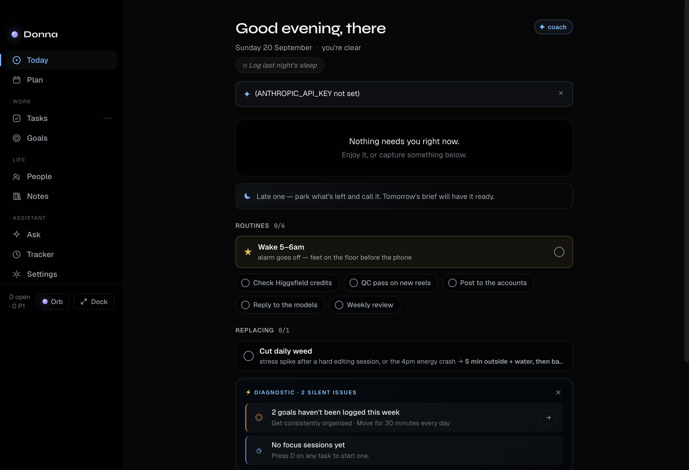

A local-first personal assistant for macOS. Tasks, goals, habits, notes and a chat that actually knows your world — powered by your own AI key.
curl -fsSL https://raw.githubusercontent.com/alj04ofm-svg/donna/main/install.sh | bash
Universal build (Apple Silicon + Intel) · macOS 13+ · MIT licensed

No account, no cloud sync, no telemetry. Your tasks, notes, goals and
tracked time live in ~/Library/Application Support/Donna. AI requests go
straight from your Mac to the provider you choose — nothing in between.
claude CLIYour focus task, today's list and habits, at a glance.
Horizons and a board — priorities, due dates, estimates, focus timers.
Time-block your day around your calendar.
Objectives, key results and weekly commitment.
Flexible daily/weekly habits with streaks.
Durable notes, highlights and quick captures.
Chat grounded in the files and folders you point her at.
Optional, fully local time tracking and focus sessions.
⌘⇧Space summons Donna from anywhere⌥Space opens quick capture